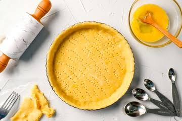
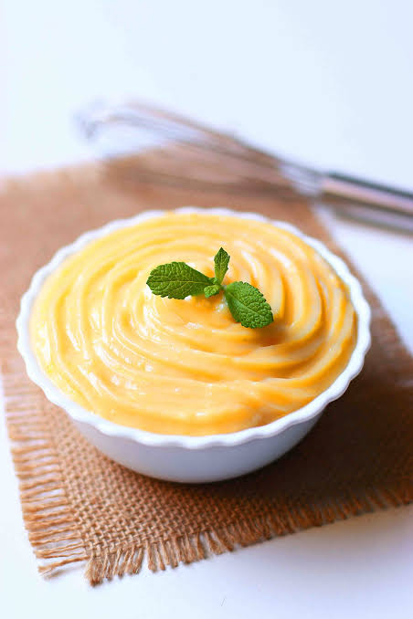

Basicos
Recetas basicas que sirven para muchas preparaciones.
Masas
Masa Sablee

Ingredientes
- 80 g de manteca pomada
- 180 g de harina
- 80 g de azúcar impalpable
- 2 yemas
- 1 pizca de sal
- 1 cucharada de agua
Procedimiento
- Colocar todos los ingredientes en un bowl.
- Amasar hasta obtener una masa homogénea. Si es necesario, agregar un poco más de harina.
- Enfriar la masa en la heladera durante 30 minutos.
Rellenos
Crema Pastelera

Ingredientes
- 2 yemas
- 50 g de azúcar
- 2 cucharadas de maicena
- 250 ml de leche
- Esencia de vainilla
- Ralladura de limón
Procedimiento
- Fuera del fuego, en una cacerola, mezclar las yemas con el azúcar utilizando un batidor de globo.
- Agregar la maicena y mezclar bien.
- Incorporar por último la leche y continuar mezclando.
- Llevar la preparación a fuego medio y mezclar constantemente con el batidor de globo hasta que espese.
- Cuando espese, agregar la esencia de vainilla y la ralladura de limón.
- Retirar del fuego cuando alcance la consistencia deseada.